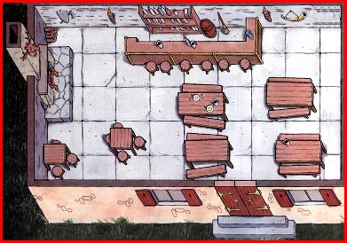

A Tunnels and Trolls PBP (Play By Posting) Adventure
Chapter 1: Bar

119 - Kopfy - 2/22/00 12:06 am
...being an Ork sage, or otherwise known as a barstool philosopher with a temper.... Can someone loan me a gold piece?

120 - pnakh - 2/22/00 7:16 am
kopfy : "Can someone loan me a gold piece?"
pnakh : "Here's a copper, kid. Buy yerself a REAL beer!"
121 - jimship12 - 2/22/00 8:49 am
If Pnakh is buying, set me up one too! Move down a bit Kopfy and make some room. Hey everyone! Pnakh's buying a round for the house! Free beer!
(Patting Pnakh on the back for his generosity!*)
123 - pnakh 2/22/00 3:06 pm
jimship12 : (Patting Pnakh on the back for his generosity!*) (*small fragments of mouldy cerement make a small, infectious cloud about pnakh - the barkeep looks dubiously at the dates on the coins he offers, goes to bite one, thinks better of it, then looks around the tavern...)
barkeep : "s'fairly empty ineer, awri', drinks all rown!"
124 - jimship12 - 2/22/00 5:52 pm
You know, if I wasn’t such a big hunk of horse dung my dear friend Pnakh.... that and I had any real coins. I would of course buy you a round of dark swill.
(Taking the free drink I gulp it like desert nomad. Waving the infectious cloud of dust away from my drink.)
Where is everyone? Even my friend Kopfy, or that unusual fellow Kaimaret seems to have wandered off. Come to think of it so has the ork serving wenches! Can you even speak Pnakh?
(I eye Pnakh closely, but he doesn’t even seem to move. Then again my vision is a bit blurry.)
I swallow the last of my drink and the fragments within it in one last gulp.
(I consider trying Pnakh for a second free drink, but I pass out before making a decision.)
129 - Kopfy - 2/23/00 1:49 am
Ah keep the copper...I needed gold to bribe the Fire Watch into not condemming my apartment down in the Harbor corridor.
(Smiles at Bar Maid)
Schatzi...could you run a tab for the next round and my esteemed colleages here...
(Aside to the boys)
She's been sweet on me since I got beat up by that barbarian bouncing from the Northern Waste. She likes a bleeder...
133 - jimship12 - 2/23/00 10:08 am
Is that you Kopfy? (Shaking the fairies from my head. Just waking up from being passed out on the bar.) Where’d Pnakh go, he was just sitting there gathering dust a moment ago, I think... what day is it? (Kopfy eyes me suspiciously.)
So the ork bar maid is sweet on you Kopfy? If the truth be known she’s sweet on everyone if’n get my meaning. Being a good bleeder doesn’t hurt though. (I smile slightly, thinking about her ork charms.*)
Tell me your troubles? The bar sage is to help.... you know, if’n you buy me a drink and all.
137 - Kopfy - 2/23/00 11:50 pm
Well I didn't say I wanted to marry her, my furry-footed friend.
Pnakh stepped out to the boy's room, I believe.
Now all I have to do is get a golden into the pocket of Fire Watch captain Huros and I wont have move my fine assortment of grimores and scrolls to yet another rathole.
138 - jimship12 - 2/24/00 12:16 am
Have you ever considered letting someone solve your watch captain problem for you Kopfy? (I make a quick gesture across my throat and then scan the tavern for Pnakh.)
Less a few coin and he might’n be a floater. (I study Kopfy’s knavish face, wondering if he up to it.) Its not likely his pimply ass will be missed. (I free a lump of dirt from between my Hobbit toes with my dirk.... waiting for his answer.)
140 - tarandracon - 2/24/00 10:40 am
Suddenly the doors to the tavern burst open. Two orcs walk through, obviously enjoying their conversation.
"Well, I kicked that joker bassaf out," one of the two orcs speaks. "Told him if he ever wanted to see his dog again, he'd head for the hills to a hu-man bar. This here ain't no place for pansy hu-mans. Now warrior humans, maybe...."
"Agreed, Taran," the second orc replies. "Even if you are the younger stripling, you got spunk."
"Let's step up to the bar, Jax," the orc named Taran grumbles. But then, he spots the shambling mound of cloth strips somehow (magically?) held together, at the front and center of the bar. "Uh, maybe let's get a table instead."
141 - jimship12 - 2/24/00 11:14 am
Spinning on my bar stood I watch the two new arrivals closely. (Thinking, that’s just what we need... two more orcs to liven’ up the joint!*) I flex my large hobbit toes. Climbing off the bar stool I approach the two orcs.
"Hi.... Apple... and Jax. I may have a job for you two. Are you interested?"
144 - pnakh - 2/24/00 2:50 pm
(Pnakh orders another flagon of embalming solution enriched mead and wonders whether the orcs will eat the Hobbit's toe hairs, or spit them out.)
154 - jimship12 - 2/25/00 8:47 am
Having quickly decided the two orcs I referred to earlier as Apple and Jax were not exactly my type of drinking companions, I quickly took my small nimble Hobbit frame back over to the safety of the bar, climbing up on an open bar stool between Kopfy and Pnakh.
"So... guys... old friends, didn’t I buy the last round of drinks?" I ask them brazenly, looking from one to the other.
155 - Kopfy - 2/26/00 12:19 am
Kopfy looks hopefully at Pnahk, wondering just how far the barmaid will let my tab go this moon-cycle.
I scratch my left bat-like ear, the one with the bite mark in the lobe, and casually roll my slender neck across both of knobby shoulders--as to get a better look around the bar and the two newcomers. With an absent-minded air I flex the hand with 4 out of five claws still on it and run them through my sandy-blonde hair, which is contrast my green skin. I relax to let my mountain ork frame pull itself up from the crouching huddling around a mug causes and smile with my lipless, gnarly fanged smile.
"Nah Horus for being the fat, bribable city clerk that he is would probably survive any attack on him." I say swigging only half of my dark ale. "I've heard stories...maybe we can get him to find us a job delving some sewer that's been overrun by goblins?"
156 - jimship12 - 2/26/00 1:45 am
Still seated on the bar stool between Kopfy and Pnakh I look from one to the other, sipping my newly purchased drink of dark swill. (I wonder to myself if Pnakh will ever discover I added it to his bar tab. I smile inwardly as only Hobbits can.)
"Tell me more about these goblins Kopfy?"
159 - misfitsprite - 2/29/00 3:42 pm
A silver light comes through the dirty tavern window and gently floats to the bar... it softly lands on the edge of the bar and a small figure appears. A pixie with silver hair is there wearing a silver tunic and holds a small silver inlaid ivory staff in her hands. She gazes up at you and your compains and speaks, "I hear you guys are having some fun around here and was wondering if you could use some help?"
160 - jimship12 - 2/29/00 4:59 pm
Sitting in my normally slouched position on the bar stool between Kopfy and Pnakh (I first cast a glance from one to the other just in case I’m dreaming... or still in a drunken stupor.) As usual Pnakh never moves but I do notice Kopfy eyeing the newly arrived pixie.
"So you're a pixie huh?" I stretch my short hobbit legs scrutinizing her closely as all hobbits do. (Wondering what her ivory staff would be worth at the Khazan Magic-Mart.) "We don’t get very many pixie visitors in here you know. Mostly stinky orks... sorry Kopfy, I wasn’t talking about you." He nods understandingly. "There was one the other day... no, I take that back it was a sprite, or was it brownie... anywho, I’m glad to meet you. Most just call me Hobb. Kopfy and I are open to for a we bit of adventure... yee most comely pixie?"
"Care to buy I friendly Hobb a drink?"
161 - misfitsprite - 2/29/00 6:21 pm
"Greetings Hobb, Kopfy, and Pnakh... my fiends just call me sprite... and buy a u a drink u ask? hmmm...."
I reach into my belt pouch and toss a steel mark on the counter.. "Barkeep, a round of drinks for my compains here. As for myself i carry my own." A silver flask appears in my hands and i take a healthy swig. I turn my attention back at the three sitting before me, "So boys, whats the name of the game we're after?"
162 - jimship12 - 2/29/00 7:13 pm
Since no one else seems willing to be the first to speak to the charming pixie I take command of the situation. The barkeep grumbles something as he serves our newly purchased drinks. I smile to the pixie when they are delivered.
"Thanks kindly for the dark swill... M’lady," I acknowledge, rubbing the foam away from my Hobbit lips with my shirt sleeve after taking a drink. "A pixie named Sprite... very interesting! My ork-sage friend here beside me (i.e. Kopfy) has discovered news that a goblin clan has infested the sewers in lower dock-side. He’n figures the Watch Captain would reward us handsomely if’n we routed them miscreants post haste. It’d be a three way split of all loot garnered, four if Pnakh joins us. Am I to assume you’re in then Sprite?"
"We leave as soon as I finish me’ swill!"
163 - Kopfy - 3/1/00 1:24 am
Kopfy sighs in relief as the next round of Pigs' ale arrives. I take a long swig of the fresh, cool dark swill and lick my lipless yapper with a loud sigh.
"Well met and all sturf Pixel gal." I say "Now Hobbs here and our esteemed piece of moldy adventurer, here..." (indicating Pnahk) "...where just discussing on how we might get some delving done and saving the apartment of a very humble schollar."
165 - pnakh - 3/1/00 6:33 am
(Pnakh grumbles flakily into his mead *)
"Have to get my boots - sewer muck messes up my dressings"
"I'll meet you at the dockside, you can't miss me, I'll be the only guy hanging around in bandages and gum boots waving a mitre."
(The door does not strike his rear end as he strides out. *)
171 - tarandracon - 3/1/00 6:04 pm
Well, for what it is worth, in case the current bar chatting turns into an adventure, here are the stats on Taran Dracon, prior to his adventure (and demise) in Khazan as an Agent of Arahk Gnahk (c.f. http://www.geocities.com/~trollgod/frames.html). Which means he is very green behind the ears, and still alive (ha ha). Of course, this could be an alternate-dimension Taran. I guess it depends on if you want to play in KStA's Khazan or someone else's.
Taran "SniperOrc" Dracon (orc/warrior) -------------------------------------- Strength: 18 Constitution: 16 Luck: 10 Dexterity: 11 Intelligence: 9 Charisma: -15 Combat Adds: +6 Size: 13 Speed: 17 Level: 1 Points: 0 Equipment: * crossbow + cranequin * quiver of bolts * Uncle Dracon's bastard sword * eating knife * leather tunic/pantsP.S. If this is the same Taran we all know and love so well (assuming he comes back to the living after KStA's adventure, then his stats and equipment are slightly different. See his current stats for details (http://www.geocities.com/~trollgod/taran_stats.html).
178 - jaxdracon - 3/2/00 12:26 pm
Jax too is in a quandry. (* Scratches knobby head with his meaty claw. Haven't I seen this putrid rag heap before? Or have I? *)
If indeed this Jax exists before KStA's "Agents of Lerotra'hh" adventure, then he will not have 10 extra points of intelligence nor a vorpal scimitar at his disposal.
OTOH, if Jax, and presumably Taran and Pnakh, have already been through that monstrous adventure, then I'll have to rewrite the ending so that we all survive (heh-heh).
Of course, if the former option is in force, then Jax would not have thought of all this, because he'd be as dumb as a, well, Orc. (* Brain does a core dump due to the existential stress. Slumps in barstool and vigorously smacks the bar with head. *)
Taran leans over, yanks up Jax's listless head by the eye sockets and examines his brother casually. "Hey, barkeep, better make his a double!"
200 - jimship12 - 3/4/00 4:19 pm
Here is my 'Goblin Mists' character -
T&T CHARACTER NAME: Shipy The Cunning, TYPE: Rogue, SEX: Male, LEVEL: 1st, KINDRED: Hobbit ST: 7, IQ: 14, LK: 17, CON: 24, DEX: 20, CHR: 16, PERSONAL ADDS: 11 SAVING ROLLS (2D6) (Must roll 5 or up.) lst Level: 5 --- 5th Level: 23 2nd Level: 8 --- 6th Level: 28 3rd Level: 13 --- 7th Level: 33 4th Level: 18 --- 8th Level: 38 PERSONAL ADDS: -2 + 5 + 8 = 11, ADVENTURE POINTS: 0 WEIGHT POSSIBLE: 700 weight units (equal to 70 pounds.) WEIGHT CARRIED: 660 units (equal to 66 pounds.), LANGUAGES: Common Tongue, Hobbit, Dwarf, Elf., NATIONALITY & PLACE OF RESIDENCE: Khazan, ARMOR/SHIELD: Total Hits Takable 9. Leather Armor (Weight 200, Cost 50, Hits Taken 6.) Buckler (Weight 75, Cost 10, Hits Taken 3.) WEAPONS: Staff Sling (it does 3d6 + your Personal Adds) 3 dice + 11 (Weight 100, Cost 8, Range 150 yards, Requires two hands to use.) Short Sabre (it does 3d6 + 1 + your Personal Adds) 3 dice + 1 + 11 (Weight 30, Cost 40, Length 2 feet.) EQUIPMENT: clothes, backpack, provisions 3 days, 1 water skin 2 days, short sabre, buckler, leather armor, sling staff, belt, lockpicking tools, 30 feet of silk rope, 1 piton hammer, 10 pitons, 100 stones (wt. 50). TREASURE: 0 Gold HOBBIT ABILITIES / HINDRANCES: Infravision 90', May locate traps on a level 2 Saving Roll if looking for them.
202 - Kopfy - 3/4/00 10:17 pm
Jim your rogue has learned "Detect Magic" and "Lock Tight" also.
205 - Kopfy - 3/5/00 10:21 am
T&T CHARACTER NAME: Kopfhat, the wiz,TYPE: Wizard SEX: Male, LEVEL: 1st, KINDRED: ork ST: 11 IQ: 14, LK: 22 CON: 16 DEX: 14 CHR: 8 PERSONAL ADDS: 12 SAVING ROLLS (2D6) (Must roll 5 or up.) lst Level: 5 --- 5th Level: 23 2nd Level: 8 --- 6th Level: 28 3rd Level: 13 --- 7th Level: 33 4th Level: 18 --- 8th Level: 38 PERSONAL ADDS: 0+10+2=12 ADVENTURE POINTS: 00 WEIGHT POSSIBLE: 1100 weight units (equal to 110 pounds.) WEIGHT CARRIED: 660 units (equal to 66 pounds.), LANGUAGES: Trade, Ork/Orc Dialects, Goblin, Hobbit, Mountain Trade Talk (dwarf, ork, and troll shared language) NATIONALITY & PLACE OF RESIDENCE: Rustic background, Khazan (Dock District), ARMOR/SHIELD: Total Hits Takable 6. Leather Armor (Weight 200, Cost 50, Hits Taken 6.) WEAPONS: Dirk dagger (2 + 1) EQUIPMENT: magical staff, clothes w. fresh underwear, backpack, provisions 3 days, 1 water skin 2 days, long boots, backpack, leather armor, 2 daggers, belt,6 torches, 30 feet of silk rope, long poncho, copper necklace, field rations (3 days), spell parchment and writing kit, kit container (leather wrap) . TREASURE: 0 Gold, 60 Silver SPELLS:Hocus Pocus (1), OGA (5), TTYF (6) Will-O-Wisp (1), Lock Tight (1), OTIS (4), K-K (2), Teacher (3) ORK ABILITIES / HINDRANCES: Infravision (60'), cold tolerance, acute smell (40'), rage* when injurede or frightened (1st IQ SR)
236 - eickeric - 3/7/00 4:07 pm
There is a rattle at the door. Apparantly someone is pushing, where it clearly says `pull'.
Eventually, the door opens and in strides a man dressed in black robes. Frankly, he looks unimpressive. Not too strong, nor particularly handsome, but he does radiate power.
Until he trips on his robe.
"mutter, mumble, stupid regulation costume, yadda yadda yadda..."
(looks around)
'Ah! behold! I am Michael of the Midnight Magics. Tremble at my might!"
He pulls a 10' series of knotted handkerchiefs out of his sleeve.
"Do not fear, I shall not harm you unless provoked. Has anyone got a sundial for my next trick?"
238 - misfitsprite - 3/7/00 5:29 pm
I'm taking a swig out of my silver flask when I hear a commotion at the door and nearly choke. Slightly flapping my wings, I raise myself from my seated postion on the bar table and watch the new arrival with interest.
I hear his proclamation and nearly double over with laughter. 'What a curious looking creature' I think to myself. 'Wonder where he was dragged up from.'
I take another swig and then put my flask back into my pouch.
"Theres one right out in front. Want to use that one?' I ask Michael.
240 - Kopfy - 3/7/00 11:50 pm
(Copying and pasting everybody's post and characters... glad to see you Misfit and Eic...please post the character sheets.)
245 - Kopfy - 3/8/00 12:34 am
Kopfy looks over at the human and then at the fairy gal. He nudges Shipo who seems a bit on the downside of consciousness to respond. With a sigh he awaits for the introductions to bge complete.
"If he pulls a rabbit out of his hat," He thinks with lopsided, fangy smile, "we've got dinner."
250 - jimship12 - 3/8/00 8:52 am
Suddenly awaken by his antics or Kopfy nudging me, I look at our new arrival. Shaking my head I say, "Silly mage... twix’s are for kids!" Motioning him a bit closer to the bar I introduce this ‘Michael of the Midnight Magics’ guy to everyone else, (the well wrapped) Pnakh, (the orkish-sage) Kopfy, the beautiful little (wizardess) sprite, and myself... (a roguish) Hobb (my real name being ‘Shipy The Cunning’), but for some odd reason Kopfy has taken to calling me Shipo. I ignore it mostly.
"If he pulls a rabbit out of his hat...we've got dinner," says Kopfy smiling a lopsided, fangy smile.
"Forget the damn sundial Michael of the Midnight Magics, we have more important things to worry about. Don’t you know.... there are Goblins in the Mists?"
253 - eickeric - 3/8/00 10:51 am
Michael peers at the sprite. "Sorry Titania, I broke THAT sundial learning the trick inthe first place. Ah well, it was an hour off anyway."
"Thanks for the intro, squirt. I'm pretty lousy at names, so remind me a few times, okay? No offense intended if I forget a few dozen times. Nametags are often helpful. I'm sure you've all heard of me, Michael of the Midnight Magics, but my friends call me... well, they only call me that when they're mad. Never mind."
"Oh, I do have a rabbit, Koffee. (Am I saying that correctly? Orcish never WAS my best language...) I doubt you'd want to eat it though. It's stuffed. I call it a `beanie buddy'. Just wait, once I get a craze for these buddies going, I'll be raking in the gold."
"Now, what's all this, Goblins in the Mist? Perhaps we'd best quite monkeying around then... ouch!"
254 - jimship12 - 3/8/00 12:38 pm
"Nope! Never heard of you! I bet they do! Okay, Titania, Kopfy, Pnakh, and Shipy. Oh, and that’s Mr. Squirt to you Michael of the Midnight Illusions," I say, poking him with my short chubby Hobbit finger. If’n you’d pay attention and quit flapping your chops Koffee... I mean Kopfy will explain it so we can begin our adventure."
"Tell him Kopfy! Kopfy?" I say, nudging the ork-sage who wasn’t paying attention.
255 - eickeric - 3/8/00 2:42 pm
MMM: "How could you NOT have heard of me? I introduced myself when I walked in..."
259 - jimship12 - 3/8/00 4:05 pm
My once smiling expression changes into that of a bitter frown. "Do you want hear what Kopfy has to say or not? I ask. "Damnit Kopfy tell him... he's grating on my last nerve!" I jab Kopfy with my elbow....
260 - eickeric - 3/8/00 4:07 pm
Why not start out as 3rd level?...the party could use an edge.
If you wanted an edge, you probably should've made one of the EFFECTIVE characters 3rd level, instead of my flake... oh well...
Michael of the Midnight Magics Warrior (such as it was) 3rd STR:10 IQ:17 LUCK:30 CON:11 DEX:10 CHA:15 SPEED:14 adds:+18 max wt:1000 carried wt:225 Languages:Common, Elven, Dwarvish, Porker (darn, but I wanted German...) Adventure points:3000 Equipment: Stylish black robes and pack Boots, knee high (made for walking) Delver's package 1 day food (Ham and chicken loaf MREs) Buckler (3 hits) Sax 2+5 10' length of knotted colored handkerchiefs Beanie Buddy rabbit Deck of cards Wand of Orcus (varnished twig with a hamster skull) Marble and 3 small cups 4 small pouches of dirt & flour 5gp 9sp 8cp
261 - eickeric - 3/8/00 4:10 pm
Michael thinks to himself, "Damnit Kopfy tell him... he's great!"
We only hear what we really WANT to hear...
263 - jimship12 - 3/8/00 8:18 pm
I walk out and bow to the crowd repeatedly saying, "Thank you, thank you!" Finished I quickly run back behind the curtain.